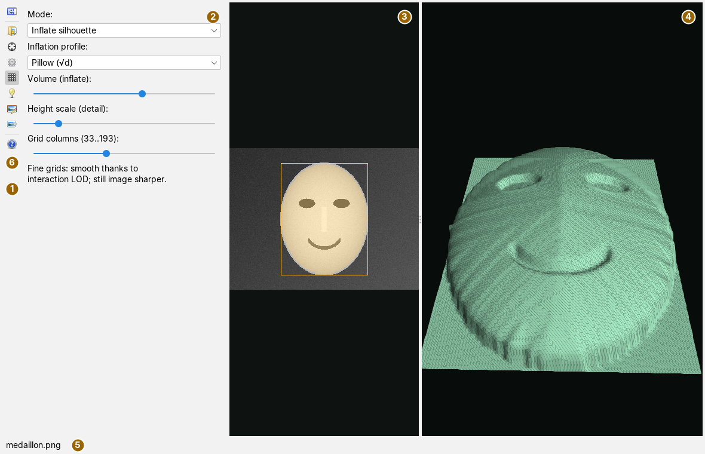
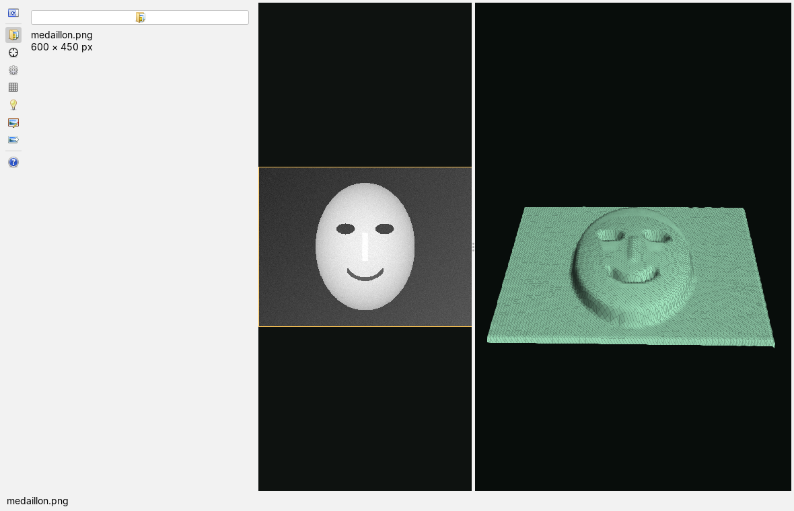
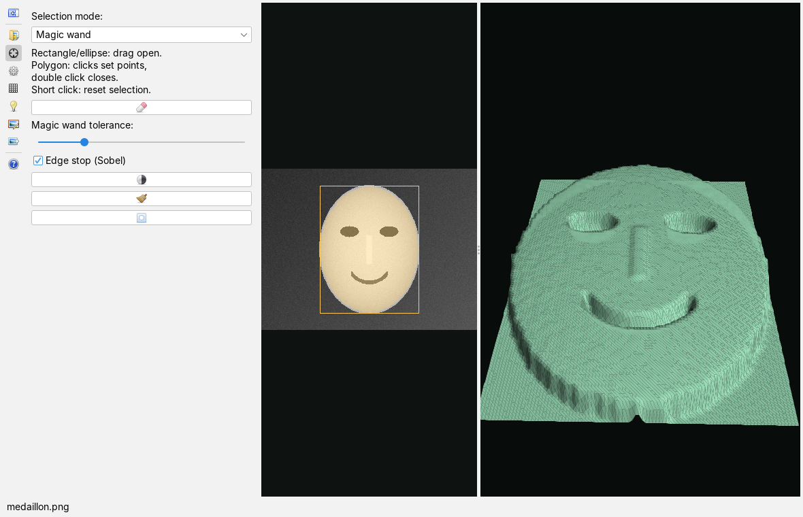
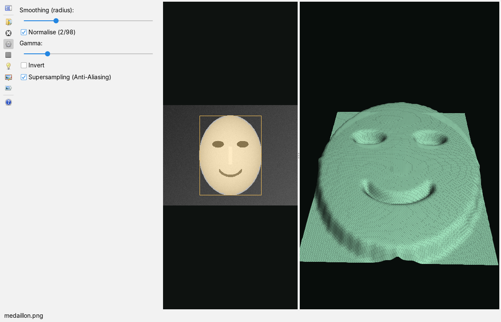
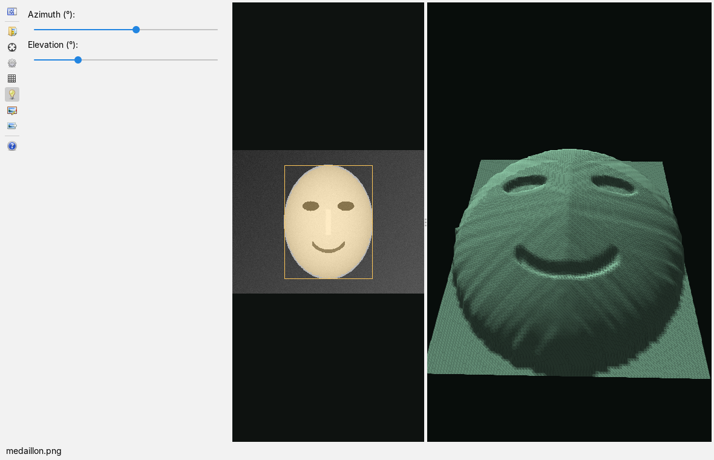
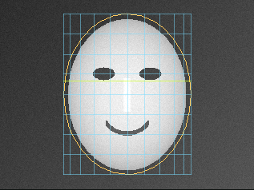
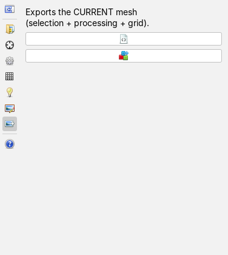

Turning an image into a 3D relief
User page, as of 7 October 2026. How to load an image, select the part that is to become relief, condition the brightness, choose between cameo and inflated silhouette, set the light, turn the relief and write it out as XML or OBJ. The pictures are screenshots of the app with a freely invented input image drawn for the purpose: a bright, domed oval with a schematic face made of ellipses and arcs on a dark graded background.
The window
The app is opened from the Apps menu with New relief view; it has no keyboard shortcut. On the left is the vertical bar with the cards, next to it the card that is open, in the middle the image in grayscale with the selection, and on the right the relief in 3D. There are no pop-up windows for settings; only opening and saving files brings up the file dialog.

The divider between image area and 3D view can be moved. The image area shows the image as luminance after Rec. 709, fitted and without distortion; the selection has a yellow outline, a pixel mask a yellow overlay. As long as no image is loaded, the area reads Rail page “Image” → Open image and the 3D view 3D — orbit: drag, zoom: mouse wheel.
The bar
The buttons carry icons only; their name is in the tooltip. A click opens the card, a second click on the same button closes the card area again; at most one card is open at a time. The cards are 344 pixels wide.
| Icon | Tooltip | What happens |
|---|---|---|
 | Show or hide the options area | Opens the first card (Image) when the area is closed and closes it when it is open. The icon changes with the state ( = open). = open). |
 | Image | Card Image: open an image, name and size. |
 | Selection | Card Selection: selection mode, magic wand, mask tools. |
 | Processing | Card Processing: smoothing, normalise, gamma, invert, supersampling. |
 | Relief | Card Relief: mode, profile, volume, height scale, grid. |
 | Light | Card Light: direction of the light. |
 | Portrait | Card Portrait: fit grid and displacement field. |
 | Export | Card Export: save the relief as XML or OBJ. |
 | Help: user page in the docs | Opens this page in the docs app, like F1. The status line reports Docs opened and gives the address of the website for a launcher without the docs app. |
Loading an image

- Open the Image card and press the button (Open image…).
- Choose an image in the file dialog;
png,jpg,jpegandbmpare offered. Colour images are converted to grayscale. - The card gives file name and size in pixels, the status line and the tab title the file name. The selection is then the whole image, and the relief appears at once.
An image that cannot be read is reported in the status line as Error while loading: Format not readable; an image loaded before stays in place. Loading happens in the foreground: with very large images the user interface stands still meanwhile.
An image can also be opened without the card: via File › Open File… in the main window, by dropping it onto the window or as a file on the command line. Since the digitizer and the magnifier open images as well, the main window then asks in a bar which app to use; each file opens a new tab.
Selecting

The selection decides what becomes relief; outside it the height is zero. It is the real work: inflation has few adjustments, it cannot spoil a good silhouette and cannot rescue a bad one. Time spent on the selection is better invested than any readjustment afterwards.
Selection mode: offers four kinds:
| Kind | Operation in the image area |
|---|---|
| Rectangle | Drag open with the mouse button held. A short click (less than four pixels of travel) resets the selection to the whole image. |
| Ellipse | Like the rectangle; the ellipse fills the rectangle dragged open. |
| Polygon | Each click sets a point, a double click closes the polygon. With fewer than three points it is discarded. Changing the selection mode discards a half-finished polyline. |
| Magic wand | A click selects, from that point, all connected pixels whose brightness differs from the starting point by at most the Magic wand tolerance: (slider 0.02 to 0.60, default 0.15). With Edge stop (Sobel) (default on) growth also halts at strong edges. |
The buttons of the card:
| Icon | Tooltip | What happens |
|---|---|---|
 | Reset selection | The selection becomes the whole image. |
 | Suggestion (Otsu): automatic object mask, smaller brightness class | Splits the image at the Otsu threshold into bright and dark and takes the smaller class as the object. The result is a pixel mask. |
 | Clean up (morphology): close + open, largest component, fill holes | Closes small gaps, removes crumbs, keeps only the largest connected region and fills its holes. |
 | Invert mask | Inverts the pixel mask. |
Clean up and invert act only on pixel masks from magic wand or Otsu; with a rectangle, an ellipse or a polygon the status line says so. For a pixel mask the yellow frame shows its bounding rectangle.
Conditioning the brightness

Conditioning works on the sampled grid, not on the full image; all sliders therefore follow without delay, however large the image. The steps run in this order:
- Smoothing (radius): Gaussian blur with a radius of 0 to 8 grid cells (0 = off).
- Normalise (2/98) stretches the brightness so that the 2 % percentile goes to 0 and the 98 % percentile to 1; whatever lies above or below is clipped.
- Gamma: from 0.3 to 3.0 (default 1). Below 1 it lifts the dark tones, above 1 it lowers them.
- Invert swaps bright and dark: dark parts then stand in front.
Supersampling (Anti-Aliasing) (default on) samples on a grid of double density and averages each point over its 3 × 3 neighbours. This suppresses moiré when the image contains fine screens. Grid points outside the selection enter with height zero.
Shaping the relief
The Relief card (picture in the section The window) decides where the height comes from.
| Mode | Height | for |
|---|---|---|
| Cameo (flat) | conditioned brightness times Height scale (detail): | originals whose brightness really means height: drawings, embossings, height images. |
| Inflate silhouette | profile of the edge distance times Volume (inflate):, plus the brightness times Height scale (detail): | photographs: the body comes from the outline, the brightness adds only detail. |
For inflation, what counts for each grid cell is its distance to the edge of the selection; the further inside, the higher. Inflation profile: shapes the course:
| Profile | Course | Effect |
|---|---|---|
| Pillow (√d) | square root of the edge distance | plump, steep at the edge and round on top |
| Cone (d) | linear | ridged, a crest above the centre line |
| Plateau | smooth rise in the outer 35 % of the edge distance, level beyond | flat on top, with a rounded edge |
The sliders: Volume 0 to 150 (default 70), Height scale 5 to 150 (default 60), both in world units for a relief width of 460. Grid columns (33..193): (default 97) sets the fineness; the number of rows follows from the aspect ratio of the selection so that the cells stay square. The grid is rebuilt only when the slider is released; all other sliders act at once.
Brightness is lighting, not depth. A pixel carries the colour of the surface, its inclination to the light, strength and direction of the light, shadowing and the exposure of the camera – depth is not on that list. In cameo mode the dark eyes of the example therefore become holes (picture in the section Loading an image). When inflating, brightness enters only through the height scale; with a small height scale the body stays a body.
Light and view

The Light card sets the direction of a distant light source: Azimuth (°): 0 to 360 (default 40) and Elevation (°): 10 to 85 (default 46). The shading follows at once; the relief casts no shadows.
In the 3D view, dragging with the mouse turns the relief: horizontally about the vertical axis, vertically the tilt, which stays between 8° and 80° so that the surface is never seen from below. The mouse wheel moves closer and back. While dragging, the app draws a half-resolution mesh and the full one again on release, so that fine grids also turn smoothly.
Portrait and displacement field

For face images the app writes a displacement field that the face mesh of another app of the framework takes up:
- On the Selection card choose the mode Ellipse and drag the ellipse over the face.
- Open the Portrait card. With Show (t,φ) grid (default on) the fit grid lies over the ellipse; the eyes should lie on the highlighted eye line.
- Set Amplitude (world units): 1 to 12 (default 4) and Smoothing: 0 to 4 (default 1).
- Press the button
 and confirm in the save dialog; the dialog proposes the file name that the face display expects.
and confirm in the save dialog; the dialog proposes the file name that the face display expects.
The field has 39 × 27 values over the whole ellipse, across up to 75° to each side, and is centred on its mean. Without an ellipse selection the status line reports that an ellipse is needed, and nothing is written. Amplitude and smoothing act only on the field, not on the relief in the 3D view.
Writing out

| Icon | Tooltip | What happens |
|---|---|---|
 | Export XML mesh… | Saves the mesh as relief XML with a format version: vertices, normals and triangles. |
| Export OBJ… | Saves the mesh as Wavefront OBJ with vertices, normals and faces, for further work in 3D tools or for 3D printing. |
What is written is the current mesh at full resolution, that is selection, conditioning, mode and grid as they are set at the moment. If the extension .xml or .obj is missing, the app appends it. The status line then gives the file and the numbers of vertices and triangles; without a loaded image it says No mesh — load an image first. The app cannot read either file back; they are outputs, not a working state.
What is saved
When the workspace is saved, the app remembers the path of the image, the selection (kind, bounding rectangle, the points of a polygon and a pixel mask run-length encoded) and all sliders and switches of the cards Processing, Relief, Light and Portrait. At the next start it loads the image again and restores everything. Selection mode, magic wand tolerance and edge stop are not saved. A very fine pixel mask (encoding longer than 60,000 characters) is not saved; after the start the bounding rectangle then applies. If the image is missing, the view stays empty. The viewing angle of the 3D view and the open card are not saved.
Keyboard and mouse
The image area is operated with the mouse (dragging, clicking, double click, see Selecting), the 3D view with dragging and the mouse wheel. F1 opens this page in the docs app; the app has no shortcuts of its own.
Limits
- The result is a relief, not a model: it has a front and no back, and the depth relations do not match the original. That is enough for a medallion or an embossing, not for a measurement.
- The sliders do not show their value as a number.
- Images are loaded in the foreground; with very large images the user interface stands still meanwhile.
- A method that estimates depth from shading is missing on purpose, as is a base shape onto which the image is applied only as fine structure; the portrait field is so far the only route of this kind.
What the app can do and what it is built on is described in the overview.